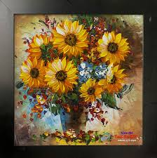
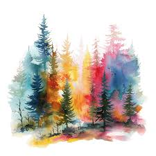
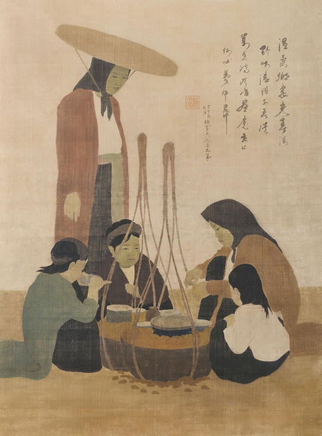

TRANG CHỦ
SHOP
THỂ LOẠI
THIẾT KẾ
NGHỆ THUẬT
ĐĂNG NHẬP
GIỚI THIỆU
Chào mừng đến với trang triển lãm tranh – không gian nghệ thuật trực tuyến nơi kết nối nghệ sĩ và người yêu tranh. Tại đây, bạn có thể khám phá các tác phẩm đa dạng từ nhiều phong cách, tìm hiểu câu chuyện của nghệ sĩ, và dễ dàng tương tác hoặc sở hữu những bức tranh độc đáo. Cùng chúng tôi lan tỏa vẻ đẹp của nghệ thuật đến mọi người!
TRANH GỐC CHỌN LỌC THEO CHỦ ĐỀ



ĐÓNG GÓP Ý KIẾN
Họ và tên:
Nội dung góp ý:
Gửi đi
Nhập lại
Chatbox
×